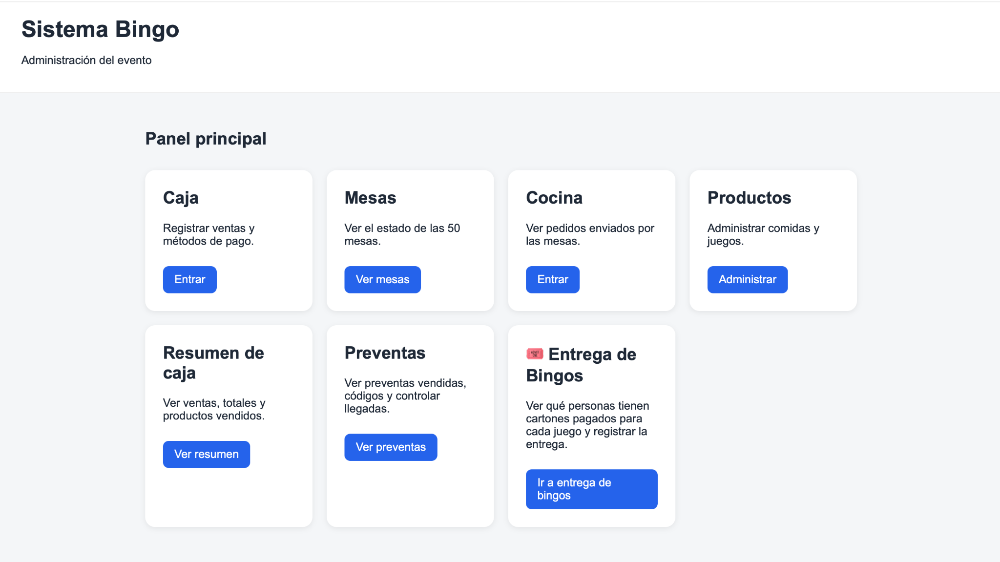
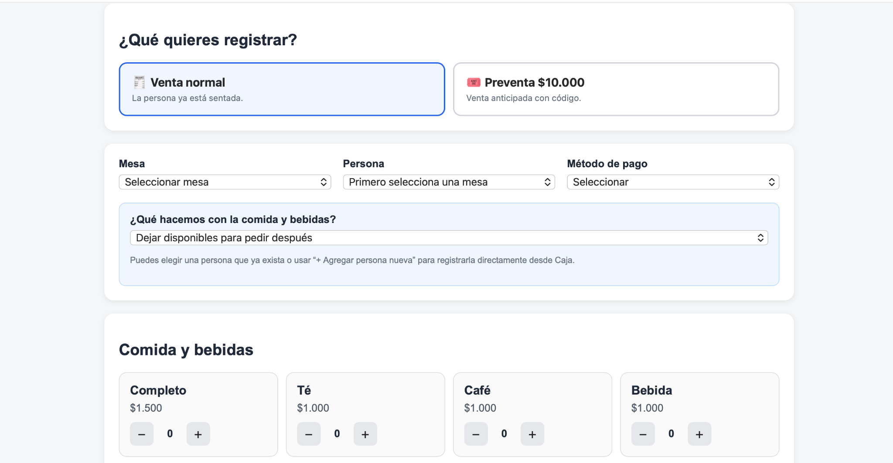

Proyecto 01 · Desarrollo web
Sistema web de gestión para eventos
Aplicación web creada para administrar un evento de Bingo con aproximadamente 50 mesas. Permite registrar ventas, gestionar productos y preventas, controlar pedidos y separar las funciones de caja, mesas, cocina y administración.

